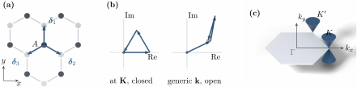
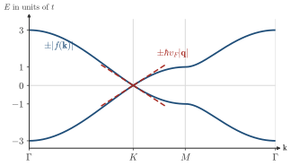
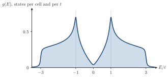
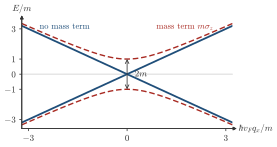

Advanced Quantum Materials 2027 · All lectures · Lecture notes
Session 2. Symmetries, Tight-Binding Band Structure Theory, and Effective Models
2.11a The Dirac cone of the honeycomb lattice of graphene
Why do the two bands of graphene touch, and what does the band look like close to the touching point? We will now see that at the corners \(K\) and \(K'\) of the Brillouin zone the phases of the three hoppings of an atom point at \(120^\circ\) from each other. They cancel, so the two bands meet at zero energy. Close to these points the band is a cone, \(E=\pm\hbar v_F|\mathbf q|\) with the velocity \(v_F=3ta/2\hbar\).
\[H(\varphi) = t + \gamma\, e^{i\varphi} + \gamma^\dagger e^{-i\varphi}, \tag{2.12}\]
This is the Bloch Hamiltonian of Section 2.7. The matrix \(t\) holds the hoppings inside the unit cell, \(\gamma\) the hoppings from one cell to the next, and \(\varphi\) is the phase per cell. Its size is the number of orbitals per cell, and in two dimensions there is one phase for each direction, which we write together as \(\mathbf k\).
The honeycomb lattice of graphene has two orbitals per unit cell, one on each of two triangular sublattices, which are usually called \(A\) and \(B\), and which sit on an underlying triangular Bravais lattice. Nearest-neighbor hopping only connects \(A\) with \(B\), and never \(A\) with \(A\) or \(B\) with \(B\), so by the method of Section 2.7 the Bloch Hamiltonian (2.12) is purely off-diagonal,
\[H(\mathbf{k}) = \begin{pmatrix} 0 & f(\mathbf{k}) \\ f^\ast(\mathbf{k}) & 0 \end{pmatrix}, \qquad f(\mathbf{k}) = t\sum_{j=1}^{3} e^{i\mathbf{k}\cdot\boldsymbol{\delta}_j}, \tag{2.19}\]
where \(\boldsymbol{\delta}_j\), \(j=1,2,3\), are the three vectors that connect an \(A\) site with its nearest \(B\) neighbors. When we diagonalize (2.19) we obtain \(E_\pm(\mathbf{k})=\pm|f(\mathbf{k})|\). With the sign of (2.5) the off-diagonal element would be \(-t\sum_j e^{i\mathbf{k}\cdot\boldsymbol{\delta}_j}\), and we write it with \(+t\) since the overall sign of \(f(\mathbf{k})\) drops out of the bands \(\pm|f(\mathbf{k})|\).
The function \(f(\mathbf{k})\) vanishes at two inequivalent points of the Brillouin zone, which are usually called \(K\) and \(K'\), since there the three phases in the sum cancel exactly. So both bands touch at zero energy at \(K\) and \(K'\). It is useful to see this cancellation explicitly. Figure 2.5 shows the three phase factors at \(\mathbf{K}\) as three unit vectors at \(120^\circ\) from each other, which close a triangle and so sum to zero.

We expand \(f(\mathbf{k})\) to linear order around \(K\) and write \(\mathbf{k}=\mathbf{K}+\mathbf{q}\) for small \(\mathbf{q}\). The off-diagonal entry then becomes a linear function of \(\mathbf{q}\), with one linear term for its real part and one for its imaginary part, and (2.19) reduces to the standard two-dimensional Dirac Hamiltonian.
Close to the corner \(K\) of the Brillouin zone the Bloch Hamiltonian of graphene is the Dirac Hamiltonian, and its two energies form a cone,
\[H(\mathbf{q}) \approx \hbar v_F\left(q_x\sigma_x + q_y\sigma_y\right), \qquad v_F = \frac{3ta}{2\hbar}, \tag{2.20}\]
\[E_\pm(\mathbf{q}) = \pm \hbar v_F |\mathbf{q}|. \tag{2.21}\]
Here \(\sigma_x,\sigma_y\) are the Pauli matrices that act on the \(A/B\) sublattice space and \(a\) is the nearest-neighbor bond length. The form (2.20) holds at \(K\) once a constant phase is put on the \(B\) orbital, and at \(K'\) the \(\sigma_y\) term has the opposite sign, while the cone (2.21) is the same at both. The hopping \(t\) and the bond length \(a\) fix the velocity, and the geometry of the lattice fixes the position of \(K\).
The steps From the off-diagonal entry (2.19) to the Dirac Hamiltonian (2.20)
We take the frame of Schematic 2.12, with one bond along \(x\). The three vectors are \(\boldsymbol\delta_1=a(1,0)\), \(\boldsymbol\delta_2=a(-\tfrac12,\tfrac{\sqrt3}{2})\) and \(\boldsymbol\delta_3=a(-\tfrac12,-\tfrac{\sqrt3}{2})\), and one corner of the Brillouin zone is \(\mathbf K=(2\pi/3a,\,2\pi/3\sqrt3a)\). Figure 2.5 draws the same lattice turned by \(90^\circ\), so there \(\boldsymbol\delta_1\) is along \(y\). Our \(\mathbf K\) turned by \(90^\circ\) is at \((-2\pi/3\sqrt3a,\,2\pi/3a)\). The figure takes for \(K\) the corner \((4\pi/3\sqrt3a,\,0)\) on the \(k_x\) axis, which differs from it by a vector of the reciprocal lattice, so it is the same valley. The turn takes our \(\boldsymbol\delta_2\) to the \(\boldsymbol\delta_3\) of the figure and our \(\boldsymbol\delta_3\) to its \(\boldsymbol\delta_2\), which does not change the sum \(f\), and the bands are the same. The three phases at our \(\mathbf K\) are
\[\mathbf K\cdot\boldsymbol\delta_1=\frac{2\pi}{3},\qquad \mathbf K\cdot\boldsymbol\delta_2=0,\qquad \mathbf K\cdot\boldsymbol\delta_3=-\frac{2\pi}{3},\]
so
\[f(\mathbf K)=t\left(e^{2\pi i/3}+1+e^{-2\pi i/3}\right)=t\left(1+2\cos\frac{2\pi}{3}\right)=0.\]
Next we write \(\mathbf k=\mathbf K+\mathbf q\) and expand each exponential to first order in \(\mathbf q\), \(e^{i(\mathbf K+\mathbf q)\cdot\boldsymbol\delta_j}\approx e^{i\mathbf K\cdot\boldsymbol\delta_j}(1+i\,\mathbf q\cdot\boldsymbol\delta_j)\). The terms of order zero add up to \(f(\mathbf K)=0\), and what remains is
\[f(\mathbf K+\mathbf q)\approx it\sum_{j=1}^{3}(\mathbf q\cdot\boldsymbol\delta_j)\,e^{i\mathbf K\cdot\boldsymbol\delta_j}.\]
The simplest case is \(\mathbf q\) along \(x\), \(\mathbf q=(q,0)\). Then \(\mathbf q\cdot\boldsymbol\delta_j\) is \(qa\), \(-qa/2\) and \(-qa/2\), and
\[f(\mathbf K+\mathbf q)\approx itqa\left(e^{2\pi i/3}-\frac12-\frac12e^{-2\pi i/3}\right)=itqa\left(-\frac34+\frac{3\sqrt3}{4}\,i\right),\]
whose modulus is \(\tfrac32\,ta\,q\), meaning that the band rises with the slope \(\hbar v_F=3ta/2\). For a general direction the same sum gives
\[f(\mathbf K+\mathbf q)\approx\frac{3ta}{2}\,e^{-5\pi i/6}\,(q_x-iq_y).\]
Its modulus is \(\tfrac32\,ta\,|\mathbf q|\) in every direction, which gives (2.21). The constant phase \(e^{-5\pi i/6}\) can be removed. We multiply the \(B\) orbital by \(e^{5\pi i/6}\), which multiplies the off-diagonal entry by the same phase and leaves the energies as they are, and the Bloch Hamiltonian becomes
\[H(\mathbf K+\mathbf q)\approx\frac{3ta}{2}\begin{pmatrix}0&q_x-iq_y\\q_x+iq_y&0\end{pmatrix}=\frac{3ta}{2}\left(q_x\sigma_x+q_y\sigma_y\right),\]
which is (2.20). So the form \(q_x\sigma_x+q_y\sigma_y\) holds at \(K\) for this choice of the axes and of the phase of the \(B\) orbital. At \(K'=-\mathbf K\) the three phases are the complex conjugates, and the same steps give \(\tfrac{3ta}{2}\,e^{-i\pi/6}(q_x+iq_y)\). There we put the phase \(e^{i\pi/6}\) on the \(B\) orbital instead, and the Dirac Hamiltonian is \(\hbar v_F(q_x\sigma_x-q_y\sigma_y)\), with the opposite sign of the \(\sigma_y\) term. No constant phase on the \(B\) orbital turns this into the form at \(K\), and the energies (2.21) are the same.
The energies (2.21) are a strictly linear dispersion with the shape of a cone around \(K\), and the same calculation gives the same result around \(K'\). This is what is called the Dirac cone. Note that the curvature of the cone along the radial direction vanishes. So (2.18) gives an infinite effective mass in this direction, and at the tip of the cone the effective mass is not defined at all. Graphene is famous because its electrons are massless. This word refers to the Dirac mass term, which is the gap, and not to the curvature of the band. This is the low-energy physics of every material with a honeycomb lattice, and of graphene in the first place. There is more structure at \(K\) and \(K'\), which is a Berry phase and with it a topological classification, and we leave it for Session 3.
Schematic 2.12 compares the cone with the full bands \(\pm|f(\mathbf k)|\) along a path through the Brillouin zone. The density of states of the same two bands is in Schematic 2.13. It grows in proportion to \(|E|\) close to zero energy, since the circle of constant energy on a cone grows in proportion to its energy. It also has two peaks at \(\pm t\), which come from the saddle points of the bands at \(M\).

g4_graphene_bands.py

g4_graphene_dos.py
The cone (2.21) has no gap at its tip, which is what we mean when we call the electrons of graphene massless. In graphene the cyclotron mass was measured for carrier densities that vary over three orders of magnitude, and these experiments put an upper limit of about \(0.1\) meV on a possible gap. Our reading is that a mass term added to (2.20), if there is one, opens a gap smaller than this limit. The same experiments, on suspended graphene, find that the real spectrum is not linear, and that at the lowest densities the velocity is three times the value commonly used for graphene. The authors attribute this to the electron-electron interaction. Our reading is that the cone (2.21) with a constant \(v_F\) is the single-particle picture, which the interactions reshape. The measurement is in this article.
The Dirac cone of graphene is
\[E_\pm=\pm\hbar v_F|\mathbf q|.\]
Its curvature along \(\mathbf q\) is zero. Why do we still call its electrons massless?
Show the answers
- A. ✓ True
This is true. Massless refers to the Dirac mass, which is a term that opens a gap at the touching point. It does not refer to the curvature of the band.

The cone \(E=\pm\hbar v_F|\mathbf q|\), solid, and the same cone with a mass term \(m\sigma_z\), dashed, which gives \(\pm\sqrt{m^2+\hbar^2v_F^2q^2}\). The energy is in units of \(m\) and the momentum in units of \(m/\hbar v_F\). The mass opens a gap \(2m\) at the tip, and without it the bands touch. - B. ✗ False
This is false. Along \(\mathbf q\) the cone has no curvature, so this formula gives \(1/m^\ast=0\) and an infinite mass along the radius. Across \(\mathbf q\) the same second derivative gives \(m^\ast=\hbar|\mathbf q|/v_F\), which goes to zero at the tip, and at the tip itself the formula is not defined. So the curvature gives no single mass, and massless refers to the missing gap term.
- C. ✗ False
This is false. The velocity \(v_F=3ta/2\hbar\) contains the bond length \(a\). A mass term \(m\sigma_z\) is absent for any value of \(a\), so the bond length does not decide whether the electrons are massless.
Massless means that there is no gap at the Dirac point.
The Dirac cone of graphene is
\[E_\pm=\pm\hbar v_F|\mathbf q|,\qquad v_F=\frac{3ta}{2\hbar},\]
with \(\mathbf q\) the momentum measured from the corner \(K\) of the zone. The hopping \(t\) is doubled. What happens to the cone?
Show the answers
- A. ✓ True
This is true. The velocity \(v_F=3ta/2\hbar\) is proportional to \(t\), so the slope doubles. The touching point is fixed by the geometry of the lattice and not by the value of \(t\).
- B. ✗ False
This is false. The point \(K\) is where the phase factors of the three neighbors add up to zero. This depends only on the angles of the lattice, which are the same for \(t=1\) and \(t=2\).
- C. ✗ False
This is false. Doubling \(t\) only doubles \(v_F\) in \(H=\hbar v_F(q_x\sigma_x+q_y\sigma_y)\). The energies \(\pm\hbar v_F|\mathbf q|\) vanish at \(\mathbf q=0\) for \(t=1\) and for \(t=2\), so no gap appears.
The hopping sets the energy scale of the cone, and the lattice sets its position.
Each picture shows the bands of a lattice along \(\Gamma\), \(K\), \(M\), \(\Gamma\). The energy is in units of the hopping \(t\). Which one is graphene with first-neighbor hopping only?
Show the answers
- A. ✓ True
This is true. The two bands touch at zero energy at \(K\), where \(f(\mathbf K)=0\), and they are at \(\pm3t\) at \(\Gamma\) and at \(\pm t\) at \(M\). These are the bands \(\pm|f(\mathbf k)|\) of graphene.
- B. ✗ False
This is false. The bands have a gap of \(1.0\,t\) at \(K\). This is the honeycomb lattice with the onsite energy \(+0.5\,t\) on one sublattice and \(-0.5\,t\) on the other, which is a mass term. Since \(f(\mathbf K)=0\), the two energies at \(K\) are the two onsite energies.
- C. ✗ False
This is false. There is a single band, from \(-6t\) at \(\Gamma\) to \(3t\) at \(K\), so the cell has one site. This is the triangular lattice with \(H=-t\sum c_i^\dagger c_j\) over first neighbors. Graphene has two sites per cell and two bands.
The number of bands is the number of sites per cell, and the touching point at \(K\) is the mark of graphene.
The off-diagonal entry of the Bloch Hamiltonian of graphene is
\[f(\mathbf k)=t\sum_{j=1}^{3}e^{i\mathbf k\cdot\boldsymbol\delta_j},\]
with \(\boldsymbol\delta_1=a(1,0)\), \(\boldsymbol\delta_2=a(-\tfrac12,\tfrac{\sqrt3}{2})\) and \(\boldsymbol\delta_3=a(-\tfrac12,-\tfrac{\sqrt3}{2})\). Compute \(|f(\mathbf k)|\) at \(\Gamma=(0,0)\) and at \(M=(2\pi/3a,\,0)\), and give the range of energies of the two bands.
Solution
At \(\Gamma\) every phase is one, so \(f(\Gamma)=3t\) and the two bands are at \(\pm3t\). At \(M\) the three phases are \(\mathbf M\cdot\boldsymbol\delta_j=2\pi/3\), \(-\pi/3\) and \(-\pi/3\), so
\[f(M)=t\left(e^{2\pi i/3}+2e^{-i\pi/3}\right)=t\left(-\frac12+\frac{\sqrt3}{2}\,i+1-\sqrt3\,i\right)=t\left(\frac12-\frac{\sqrt3}{2}\,i\right),\]
whose modulus is \(t\), and the two bands are at \(\pm t\). The modulus of a sum of three phases times \(t\) is at most \(3t\), which is reached at \(\Gamma\), and it is zero at \(K\). So the bands span the range from \(-3t\) to \(3t\), a width of \(6t\).
The point \(M\) is a saddle point of the bands. So the energies \(\pm t\) that we computed are the energies of the two peaks of the density of states of graphene, which Schematic 2.13 shows.
Notebook check-in: session2.ipynb, “Infinite two-dimensional graphene” (Core)
Build the two-dimensional honeycomb Bloch Hamiltonian (2.19) directly and diagonalize it across the Brillouin zone. Zoom in on \(K\) and \(K'\) and check numerically that the dispersion there is really linear, which means that it agrees with (2.21) once you are close enough to the Dirac point.
Try it. Run the cell and zoom in on the bands near \(K\). Check that the two bands touch at zero energy and that they are straight lines close to this point. Then change the hopping in tij, and check that the slope of the lines changes with \(t\).
- In Section 3.10 a mass term opens a gap at the Dirac cone, and in Section 3.10b the Haldane coupling makes this gap topological, which gives a Chern insulator.
- Section 4.10 puts the Dirac electrons of this section in a magnetic field and finds their Landau levels.
- The honeycomb lattice comes back for magnons in Section 6.16, where the Dirac points of the magnon bands are gapped as in the Haldane model.